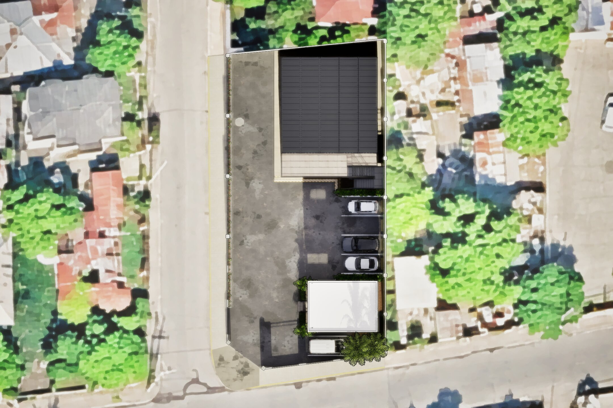
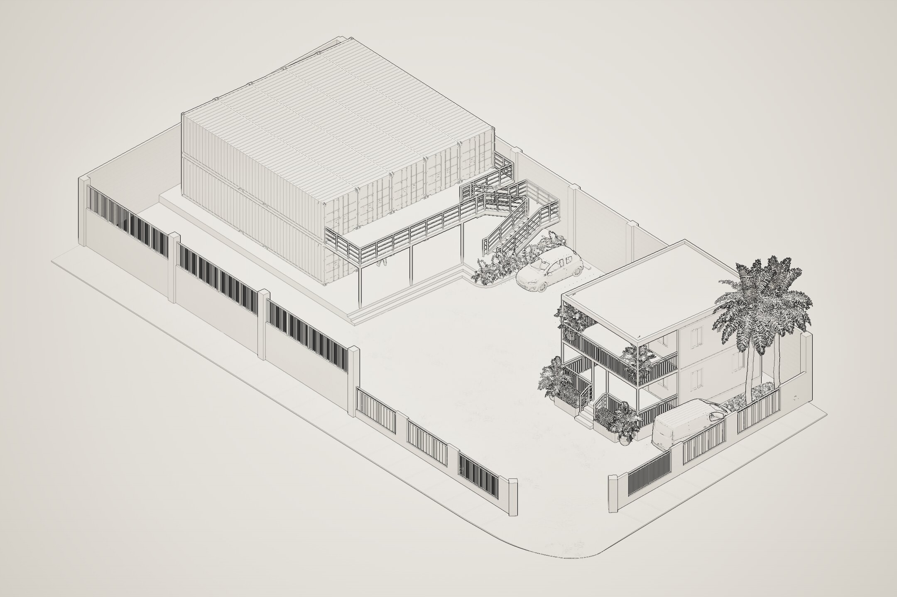
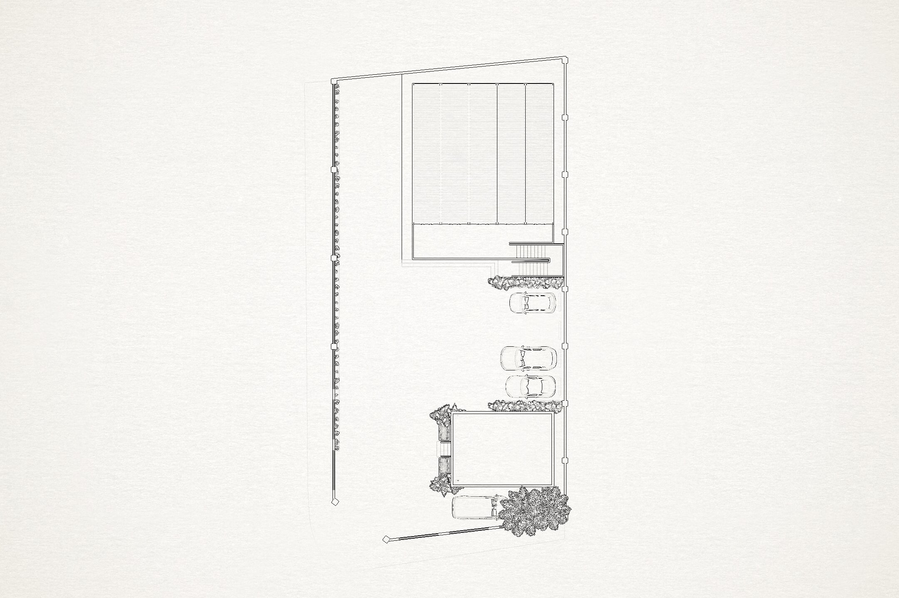

Container storage
Ten 40-ft containers arranged five across and two high, with a dedicated loading platform and stair access.

Industrial / site development
Concept design and visualization for the redevelopment of a corner property into a secure, functional warehouse yard with stacked container storage, a prefab office, parking and truck loading circulation.
Explore the project Image1.jpg
Image1.jpgProject overview
The layout is organized around truck access, loading operations and clear separation between heavy-vehicle movement and day-to-day office use.
Ten 40-ft containers arranged five across and two high, with a dedicated loading platform and stair access.
A 30 × 20 ft office positioned toward the front of the property with adjacent parking and restrained landscaping.
The central asphalt yard remains open so a trailer truck can reverse in from Wigton Ave and back toward the container loading area.
Parking, perimeter treatment, gates and pedestrian areas are kept outside the primary truck manoeuvring path.
Final presentation
Select any view to open it full screen.
Image1.jpg Image2.jpg
Image2.jpg Image3.jpg
Image3.jpg Image4.jpg
Image4.jpg Image5.jpg
Image5.jpg
Image6.jpgDesign development
Supporting views used to communicate the site organization and design development.

Image7.jpg
Image8.jpg